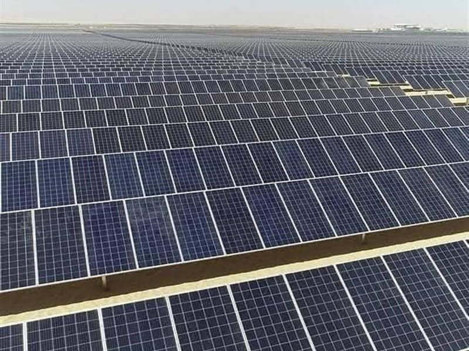

نكتب فصلاً جديداً في تاريخ الحضارة، حيث تلتقي الأرض بالسماء في مشاريع لا تعرف المستحيل.
تحديث برمجة: محمد إبراهيم
يُعد مجمع بنبان للطاقة الشمسية (Benban Solar Park) في محافظة أسوان بمصر واحدًا من أضخم المشروعات القومية وأيقونة عالمية في مجال الطاقة المتجددة، ويلقب بـ "عاصمة العالم للطاقة الشمسية". إليك أبرز المعلومات الجوهرية حول هذا المجمع: 1. الموقع والبيئة الموقع: يقع في قرية بنبان بمركز دراو بمحافظة أسوان، على بعد حوالي 40 كم شمال غرب المدينة. التميز الجغرافي: تم اختيار الموقع بناءً على تقارير وكالة "ناسا" التي أكدت أنه من أكثر المناطق سطوعاً للشمس في العالم. المساحة: يمتد المجمع على مساحة هائلة تصل إلى 37.2 كم²، وهو ما يجعله مرئياً بوضوح من الفضاء. 2. القدرة الإنتاجية والتفاصيل الفنية القدرة الإجمالية: تبلغ القدرة الحالية للمجمع حوالي 1465 ميجاوات (وتستهدف التوسعات الوصول إلى 2000 ميجاوات). المقارنة بالسد العالي: تنتج المحطة طاقة تعادل حوالي 90% من الطاقة المولدة من السد العالي، مما يعزز أمن الطاقة في مصر. عدد المحطات: يضم المجمع حوالي 32 إلى 40 محطة شمسية فرعية، تدار بواسطة شركات عالمية ومحلية مختلفة بنظام "الخلايا الفوتوفولتية". البنية التحتية: يضم 4 محطات محولات ضخمة (بتقنية GIS المعزولة بالغاز) لنقل الطاقة للشبكة القومية للكهرباء. 3. الأهمية الاقتصادية والبيئية استثمارات ضخمة: بلغت تكلفة المشروع حوالي 2 مليار دولار، بتمويل من مؤسسات دولية كبرى مثل البنك الدولي والبنك الأوروبي لإعادة الإعمار والتنمية. فرص العمل: وفر المشروع أكثر من 10,000 فرصة عمل مباشرة وغير مباشرة خلال فترة التنفيذ والتشغيل. الحفاظ على البيئة: يساهم المجمع في خفض انبعاثات الكربون بمقدار 2 مليون طن سنوياً، وهو ما يتماشى مع خطة مصر للوصول بنسبة الطاقة المتجددة إلى 42% بحلول عام 2030. 4. الجوائز العالمية حصل مجمع بنبان على عدة إشادات وجوائز دولية مرموقة، منها: جائزة البنك الدولي: كأفضل مشروع على مستوى العالم في عام 2019. جائزة التميز الحكومي العربي: كأفضل مشروع لتطوير البنية التحتية. هل تعلم؟ المشروع نُفذ بنظام الـ (Build-Own-Operate)، حيث قامت الحكومة المصرية بتمهيد الأرض وتوفير البنية الأساسية، بينما قام المستثمرون من القطاع الخاص ببناء وتشغيل المحطات، مما يجعله نموذجاً ناجحاً للشراكة بين القطاعين العام والخاص.
